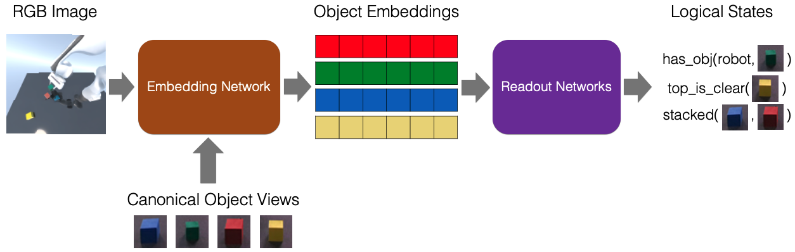

Sequential manipulation tasks require a robot to constantly reason about spatial relationships among entities in the scene. Prior works relying on explicit state estimation or end-to-end learning struggle with novel objects or novel tasks. Thus, we propose SORNet (Spatial Object-Centric Representation Network), which enables zero-shot generalization to unseen objects on spatial reasoning tasks.
Spatial Object Centric Network
SORNet consists of two parts. The embedding network extracts object-centric embeddings from RGB images conditioned on canonical views of the objects of interest. The redaout network takes the embedding vectors and predicts discrete or continuous spatial relations among entities in the scene. Note that the object queries (canonical object views) can be captured in scenarios different from the input image (e.g. with different lighting and camera view).

Downstream Tasks
The object-centric embedding produced by SORNet enables zero-shot generalization to unseen objects on a variety of downstream tasks, including predicting spatial relationships, classifying skill preconditions and regressing relative direction from the end-effector to the object center.